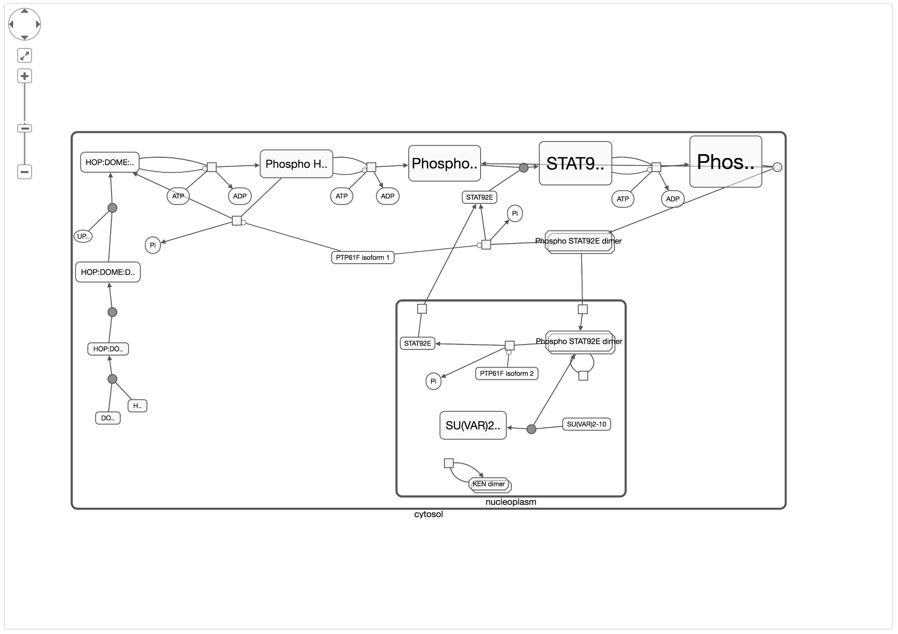

Network process
This section demonstrate APIs for querying and retrieval of the interaction network and the pathway from public database. Results are stored in networkx.Graph or Pathway object.
STRING
Single or list molecular
To search interaction network from STRING database, use the staticmethod STRING.search(name, organism='hsa') .

and each search result could be retrieved using its load method; the result of load method is a networkx.Graph with a additional plot method. Use the plot method to view the graph.

Query Entire network
Also, download the total interaction network is available for certain organism. use STRING.overall_network(organism) to retrieve the total interaction network to a networkx object.
# This function returns a nx.Graph object G contain the entire network from string for species hsa.
G = STRING.overall_graph("hsa")
BioGRID
Single or list of molecular
Similar to STRING, single or list molecular's searching is implemented in BioGRID.search, which supports three idtype: [Symbol, Extrez, pubmed].

The result is the networkx.Graph object with additional plot object.

Entire networks
Use BioGRID.overall_network(organism) to retrieve the entire network.
KEGG
To search and retrieve pathway from KEGG
# use search_kegg to search kegg database
res = PublicDatabase.search_kegg(name, organism="hsa")
# use load() method to parse the result
path = res[0].load()
# use plot to view the pathway.
The result is a pathway object, use draw method to have a quick view.

Reactome
The reactome API is integrated in the class PublicDatabase, use PublicDatabase to
search Reactome database for pathways.
res = PublicDatabase.search_reactome("jak")
results(list of class of ReactomeResult)
[source: Reactome
id: R-HSA-8950505
BioPAX: False
SBGN-PD: False
description:b'Gene and protein expression by <span class="highlighting" >JAK</span>-STAT signaling after Interleukin-12 stimulation',
source: Reactome
id: R-HSA-6788467
BioPAX: False
SBGN-PD: False
description:b'IL-6-type cytokine receptor ligand interactions',
source: Reactome
id: R-HSA-877300
BioPAX: False
SBGN-PD: False
description:b'Interferon gamma signaling',
source: Reactome
id: R-HSA-913531
BioPAX: False
SBGN-PD: False
description:b'Interferon Signaling',
source: Reactome
id: R-HSA-982772
BioPAX: False
SBGN-PD: False
description:b'Growth hormone receptor signaling']
Retrieve and draw the pathway.
# load
pathway = res[1].load()
# draw
ph.draw()
The result pathway is drawn in the interactive region

WikiPathway
The class PublicDatabase also implements search_wp API.
PublicDatabase.search_wp(keyword, organism)
which return a class of WikiPathwayResult instances, use load method to get
the pathway object. And draw to get quick preview of the pathway.
result[0].load().draw()
Example
# search
res = PublicDatabase.search_wp("jak")
# load
path = res[0].load()
# draw
path.draw()